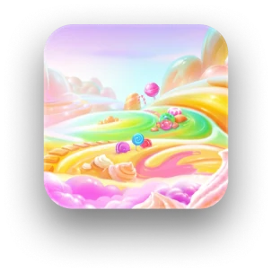
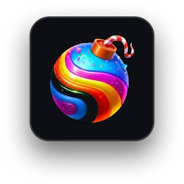
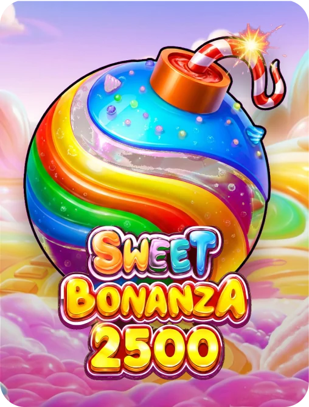

O catálogo tinha mais de 3.500 capas para atualizar em quatro formatos. No processo manual, quatro pessoas entregaram 904 em seis meses. Desenhei uma automação que produz cerca de 1.000 capas por dia e publica sozinha. O operacional passou de quatro pessoas para uma.
O problema
Cada título do catálogo precisa de capa no padrão das marcas, em quatro formatos: 3:4, 1:1, 9:16 e 16:9. Eram mais de 3.500 títulos com capa desatualizada.
O trabalho era todo manual. Três designers montavam as capas, e uma pessoa de apoio subia cada título no backoffice pelo menos três vezes, uma por formato. Em seis meses, saíram 904 capas. Nesse ritmo, zerar a fila levaria quase dois anos.
Antes e depois
Manual
- 3 designers e 1 pessoa de apoio
- Upload repetido por formato
- 904 capas em 6 meses
Com o pipeline
- 1 pessoa no operacional
- Publicação direta no backoffice
- Cerca de 1.000 capas por dia
Da referência crua à capa publicada



1 capa · 3 camadas · 4 formatos
- 1Varre o catálogoEncontra as capas que estão fora do padrão.
- 2Busca referênciasPuxa a arte original no site de cada estúdio.
- 3Separa as camadasA IA extrai as 3 camadas essenciais de cada composição.
- 4Monta no FigmaOrganiza as capas por estúdio, nos quatro formatos.
- 5PublicaSobe tudo no backoffice, sem upload manual.
Resultado
O objetivo era devolver esse tempo ao time, para criação e estratégia.
Telas
O pipeline em funcionamento, com arte neutra.